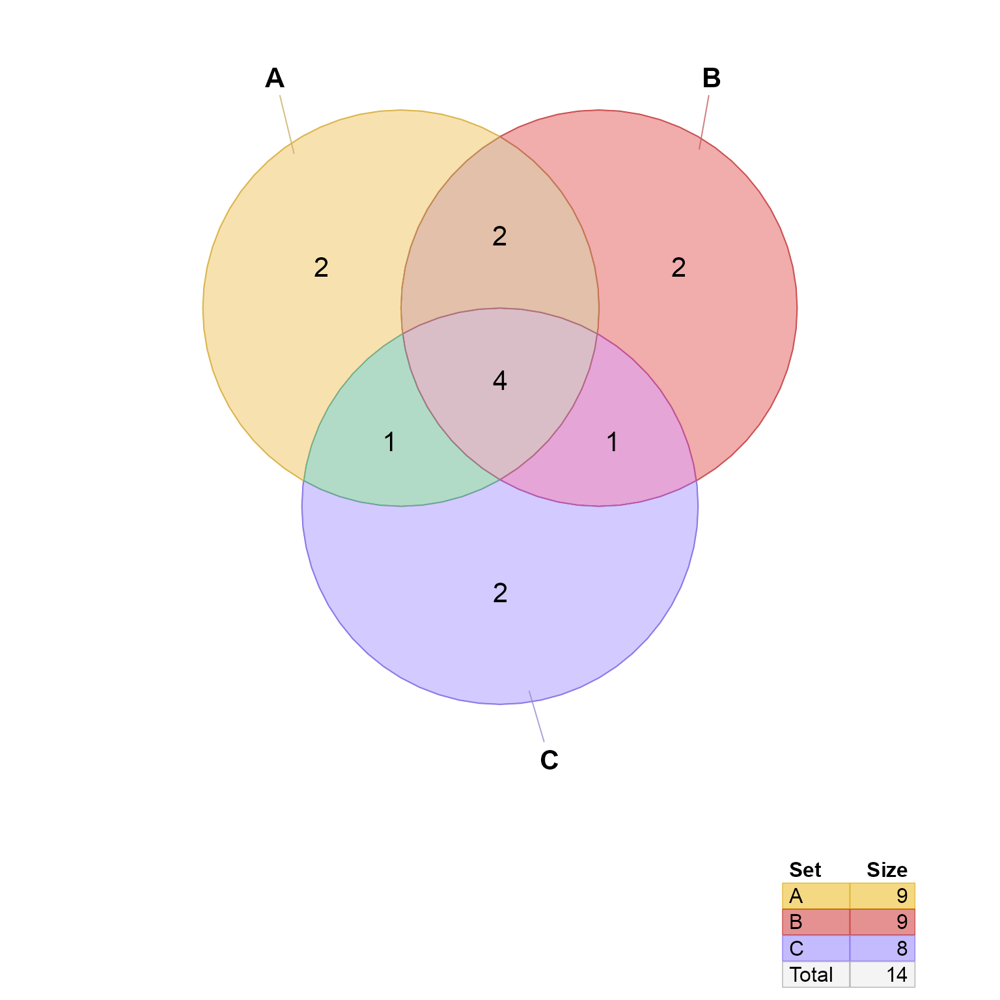

venndir conversion from overlap counts to setlist
Value
list where the list names are the names of each set,
and values of each list element is a vector of items.
The items are artificial labels used for convenience.
Details
This function takes input in the form of named vector
with overlap counts, which is the input to similar Venn
functions in eulerr::euler(), and is called "expressionInput"
when used with upsetr::fromExpression().
See also
Other venndir conversion:
im2list(),
im_value2list(),
list2im_opt(),
list2im_value(),
overlaplist2setlist(),
signed_counts2setlist()
Examples
# example from eulerr::euler()
combo <- c(A = 2,
B = 2,
C = 2,
"A&B" = 2,
"A&C" = 1,
"B&C" = 1,
"A&B&C" = 4)
setlist <- counts2setlist(combo)
setlist;
#> $A
#> [1] "A_1" "A_2" "A&B_1" "A&B_2" "A&C_1" "A&B&C_1" "A&B&C_2"
#> [8] "A&B&C_3" "A&B&C_4"
#>
#> $B
#> [1] "B_1" "B_2" "A&B_1" "A&B_2" "B&C_1" "A&B&C_1" "A&B&C_2"
#> [8] "A&B&C_3" "A&B&C_4"
#>
#> $C
#> [1] "C_1" "C_2" "A&C_1" "B&C_1" "A&B&C_1" "A&B&C_2" "A&B&C_3"
#> [8] "A&B&C_4"
#>
# Venn diagram
venndir(setlist)

# Proportional Venn (Euler) diagram
venndir(setlist, proportional=TRUE)